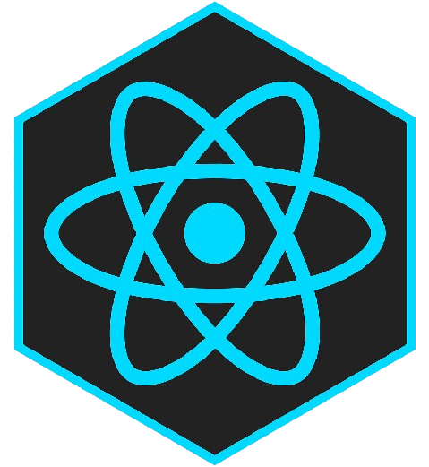
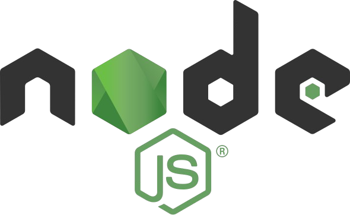

Olá, eu sou
Luan Krauspenhar
Sou desenvolvedor front-end.

Sobre mim
Sou Luan Krauspenhar, desenvolvedor front-end com paixão por criar experiências digitais que combinam funcionalidade e design. Atualmente, estou ampliando minha atuação como desenvolvedor full stack, explorando tecnologias como Node.js e React para construir soluções completas e inovadoras. Tenho um perfil focado em aprendizado contínuo e em aplicar o que aprendo em projetos que agreguem valor, tanto para usuários quanto para empresas. Acredito que a tecnologia, quando bem utilizada, pode transformar ideias em realidade, e é isso que me motiva a evoluir como profissional e entregar resultados de excelência.
Conhecimentos
Desenvolvendo

